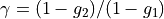

xopto.pf.util.pfmapbase module¶
- class PfMap2DBase(param1: Optional[numpy.ndarray] = None, param2: Optional[numpy.ndarray] = None, ng: Optional[int] = None, pf: Optional[xopto.pf.pfbase.PfBase] = None, filename: Optional[str] = None, ncostheta: Optional[int] = None, **kwargs)[source]¶
Bases:
objectBase class constructor.
- Parameters
param1 (np.ndarray vector) – Sampling points of the first parameter of the scattering phase function.
param2 (np.ndarray vector) – Sampling points of the second parameter of the scattering phase function.
pf (xopto.pf.PfBase) – Scattering phase function instance used with this parameter map.
ncostheta (int) – Number of nodes used to compute the Legendre moments. Use a large number (> 1000) for accurate results. If None, adaptive step integration is used, which is accurate but can become slow.
kwargs (dict) – Additional parameters passed to the constructor of the scattering phase function.
- DEFAULT_MAP_FILE = None¶
A filename for the default map. Overload this static member in derived classes.
- DEFAULT_MAP_PATH = '/home/miran/.xopto/pyxopto/data/pf'¶
A directory for the precalculated default map. Overload this static member in derived classes.
- PLOTSCALEFACTORX = 1.0¶
- PLOTSCALEFACTORY = 1.0¶
Base class for computing maps of scattering phase function quantifiers as a function ot the scattering phase functions parameters - only for two-parametric scattering phase functions.
- XLABEL = '$first parameter$'¶
- YLABEL = '$second parameter$'¶
- classmethod default_data_file() → str[source]¶
Creates a full filename for the default data file.
- Returns
filename – Full filename of the default data file.
- Return type
str
- delta(param1: Optional[float] = None, param2: Optional[float] = None) → float[source]¶
Returns the values of delta=(1 - g_3)/(1 - g_1) for the scattering phase function using the specified values of the scattering phase function parameters. If one of the scattering phase function parameters is None, the full map is returned.
- Parameters
param1 (float, ndarray) – Value(s) of the first parameter of the scattering phase function.
param2 (float, ndarray) – Value(s) of the second parameter of the scattering phase function.
- Returns
g_p – The value(s) of delta.
- Return type
float, ndarray
- classmethod fromfile(filename: Optional[str] = None) → xopto.pf.util.pfmapbase.PfMap2DBase[source]¶
Loads a scattering phase function map from a file.
- Parameters
filename (str) – Source file. If None load the map from the default file or create and save a new default map if a default file does not exist. Location of the default map file is defined by the
DEFAULT_MAP_PATHandDEFAULT_MAP_FILEstatic attributes.
- g(param1: Optional[float] = None, param2: Optional[float] = None, p: int = 1) → float[source]¶
Returns the value of the p-the Legendre moment for the scattering phase function using the specified values of the scattering phase function parameters. If one of the scattering phase function parameters is None, the full map is returned.
- Parameters
param1 (float or np.ndarray) – Value(s) of the first phase function parameter.
param2 (float or np.ndarray) – Value(s) of the second phase function parameter.
p (int) – Requested Legendre moment (p=1 … anisotropy factor g).
- Returns
g_p – The value(s) of the requested Legendre moments.
- Return type
float or np.ndarray
- gamma(param1: Optional[float] = None, param2: Optional[float] = None) → float[source]¶
Returns the value of  for the scattering phase function ussing the specified values of the scattering phase function parameters. If one of the scattering phase function parameters is None, the full map is returned.
- Parameters
param1 (float or np.ndarray) – Value(s) of the first parameter of the scattering phase function.
param2 (float or np.ndarray) – Value(s) of the second parameter of the scattering phase function.
- Returns
g_p – The value(s) of gamma.
- Return type
float or np.ndarray
- gammadelta(param1: Optional[float] = None, param2: Optional[float] = None) → float[source]¶
Returns the value of gamma=(1 - g_2)/(1 - g_1) for the scattering phase function using the specified values of the scattering phase function parameters. If one of the scattering phase function parameters is None, the full map is returned.
- Parameters
param1 (float, ndarray) – Value(s) of the first parameter of the scattering phase function.
param2 (float, ndarray) – Value(s) of the second parameter of the scattering phase function.
- Returns
g_p – The value(s) of gammas.
- Return type
float, ndarray
- grid1() → numpy.ndarray[source]¶
Returns a 2D array (meshgrid) of points defining the grid of the first scattering phase function parameter.
- grid2() → numpy.ndarray[source]¶
Returns a 2D array (meshgrid) of points defining the grid of the second scattering phase function parameter.
- invgamma(g: float, gamma: float) → Tuple[float, float][source]¶
Legendre moments, and from there gamma, are calculated on the fly, using the scattering phase function model. Calculating the scattering phase function moments on the fly is more accurate then using a precalculated map.
- Parameters
g (float) – Target value of the first Legendre moment.
gamma (float) – Target value of parameter gamma.
- Returns
param1, param2 – The estimated values of the scattering phase function parameters.
- Return type
float, float
- invgammadelta(gamma: float, delta: float, **kwargs) → Tuple[float, float][source]¶
Legendre moments, and from there gamma and delta, are calculated on the fly, using the scattering phase function model. Calculating the scattering phase function moments on the fly is more accurate then using a precalculated map.
- Parameters
gamma (float) – Target value of parameter gamma.
delta (float) – Target value of parameter delta.
kwargs (dict) – Keyword arguments passed to the fmin_l_bfgs_b optimization function.
- Returns
param1, param2 – The estimated values of the scattering phase function parameters.
- Return type
float, float
- invsigma(g: float, sigma: float) → Tuple[float, float][source]¶
Legendre moments, and from there sigma, are calculated on the fly, using the scattering phase function model. Calculating the phase function moments on the fly is more accurate then using a precalculated map.
- Parameters
g (float) – Target value of the first Legendre moment.
sigma (float) – Target value of parameter sigma.
- Returns
param1, param2 – The estimated values of the scattering phase function parameters.
- Return type
float, float
- n1() → int[source]¶
Returns the number of points defining the grid of the first scattering phase function parameter.
- n2() → int[source]¶
Returns the number of points defining the grid of the second scattering phase function parameter.
- param1() → numpy.ndarray[source]¶
Returns a vector of points defining the grid of the first scattering phase function parameter.
- param2() → numpy.ndarray[source]¶
Returns a vector of points defining the grid of the second scattering phase function parameter.
- pf() → xopto.pf.pfbase.PfBase[source]¶
Type/class of the scattering phase function that is used in this map.
- save(filename: str)[source]¶
Save instance to a file.
- Parameters
filename (str) – The target file name.
- sigma(param1: Optional[float] = None, param2: Optional[float] = None, ng: int = 15) → float[source]¶
Returns the value of sigma for the scattering phase function at the specified values of the scattering phase function parameters. If one of the scattering phase function parameters is None, the full map is returned.
- Parameters
param1 (float, ndarray) – Value(s) of the GK phase function parameter.
param2 (float, ndarray) – Value(s) of the GK phase function parameter.
ng (int) – The number of Legendre moments that is used for sigma calculation.
- Returns
g_p – The value(s) of sigma.
- Return type
float, ndarray
- load_map(filename: str) → xopto.pf.util.pfmapbase.PfMap2DBase[source]¶
Loads any of the scattering phase function maps from a file. For details see the documentation of MieFractalPolystyreneMap, MiePolystyreneMap, MHgMap, GkMap and MPcMap.